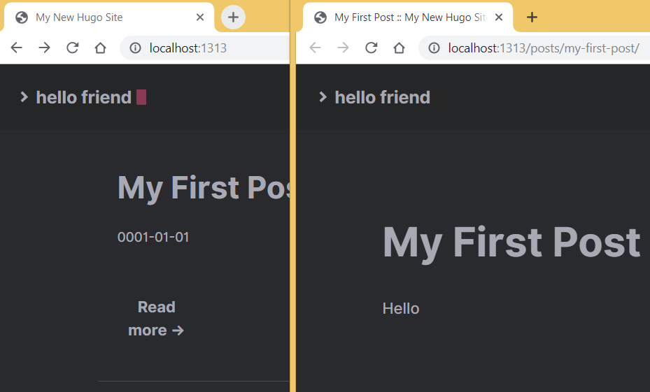

<!doctype html>
<html>
	<head>
		<meta charset="utf-8">
		<meta name="viewport" content="width=device-width, initial-scale=1.0, maximum-scale=1.0, user-scalable=no">

		<title>Основы HTML</title>

		<link rel="stylesheet" href="../dist/reset.css">
		<link rel="stylesheet" href="../dist/reveal.css">
		<link rel="stylesheet" href="../dist/theme/beige.css" id="theme">

		<!-- Theme used for syntax highlighted code -->
		<link rel="stylesheet" href="../plugin/highlight/github.css" id="highlight-theme">
	</head>
	<body>
		<div class="reveal">
			<div class="slides">

                <section data-markdown data-separator="----" data-separator-vertical="---" > 
<script type="text/template">

## HTML

---

### Структура HTML документа


---

### Пример head


---

### Пример body


---

### Атрибуты и стили HTML


---

### Скрипты HTML


----

## CSS

---

### Пример


---

### Селекторы

- `*`;
- `p`;
- `.class`;
- `#id`;
- `[name="value"]`;
- `:focus`.

---

### Сложные селекторы

- `.h1.h2`;
- `p:before`;
- `ol ol`;
- `ul > ul`.

---

### Значения атрибутов

- Текстовые: "так" или 'так';
- Размеры:
  - px;
  - em, rem;
  - vw, vh, vmin, vmax.

---

### Псевдоклассы

- `:active`;
- `:link`; 
- `:focus`;
- `:hover`;
- `:visites`.

---

### Псевдоэлементы

- `::after`;
- `::before`;
- `::selection`.

----

## Создание сайтов

---

### Способы создания

- Текстовый или HTML редактор;
- Динамическая генерация:
  - CMS (Content Management System);
  - Веб-приложение;
- Статическая генерация:
  - JAMstack (JavaScript, APIs and Markup).


---

### Роли

- Программист (клиент, сервер, ...);
- Дизайнер (дизайн, верстка, ...);
- Писатель (автор, редактор, ...).

---

### Hugo

```
hugo new site example
```


---

### Тема для сайта


---

### Пост

```
hugo new posts/my-first-post.md
```

```
content/posts/my-first-post.md:
```

```
- - -
title: "My First Post"
- - -
Hello!
```

---

###  Локальный сервер

```
hugo server
```



---

### Deploy

- Локальная версия и копирование: ```hugo``` ⇒ "/public" ⇒ хостинг/облако;
- ⇒ Система контроля версий ⇒ JAMstack хост ([netlify.com](netlify.com))

</script>
                </section>

			</div>
		</div>

		<script src="../dist/reveal.js"></script>
		<script src="../plugin/notes/notes.js"></script>
		<script src="../plugin/markdown/markdown.js"></script>
		<script src="../plugin/highlight/highlight.js"></script>
		<script src="../plugin/audio-slideshow/plugin.js"></script>
		<script src="../plugin/audio-slideshow/recorder.js"></script>
		<script src="../plugin/audio-slideshow/RecordRTC.js"></script>
		<script src="../plugin/menu/menu.js"></script>
		<script>
			Reveal.initialize({
				hash: true,
				plugins: [ RevealMarkdown, RevealHighlight, RevealNotes, RevealAudioSlideshow, RevealAudioRecorder, RevealMenu ],
				audio: {
					prefix: 'audio/',
 					suffix: '.webm;codecs=opus',
					autoplay: false,
					advance: -1,
				},
				menu: {
					custom: [{
						title: 'Home',
						icon: '<i class="fa fa-home">',
						src: '../menu.html'
					}]
				}
			});
		</script>
	</body>
</html>
